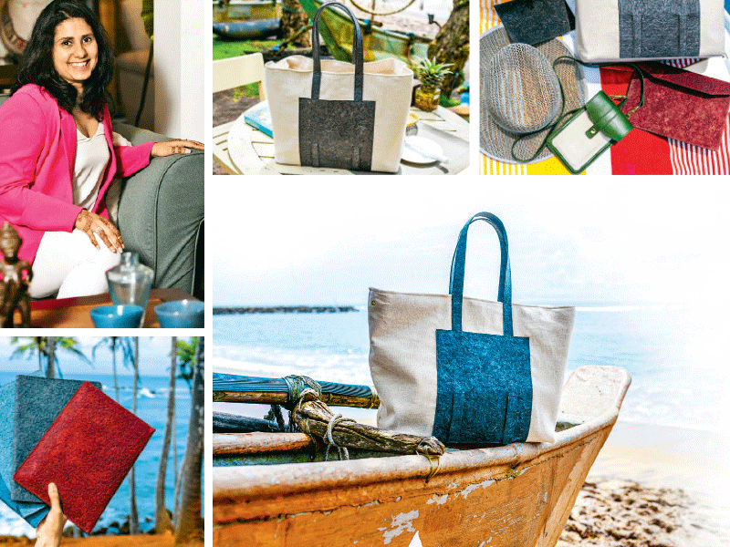

Making conscious fashion choices doesn’t just apply to our clothing. Sustainable bag selections are essential and we’re not just talking about swapping plastic grocery bags for canvas totes. With a growing number of alternative materials and plant-based leathers available, which both look and feel like the real deal, you don’t have to give up on style to make conscious bag choices.
Alafiya Najmudeen was born and raised in Sri Lanka and schooled at Asian International School. After completing her primary education, she moved to Australia to pursue her higher studies and graduated with a Bachelor of Business majoring in Event and Sports Management. She is the Founder of the sustainable fashion accessories brand, ALEAF. “I am a Jack of all trades and responsible for running everything from the daily operations, sourcing the raw materials, designing and selling. For fun, I love to travel, explore new cuisines and cultures and spend time with family and friends. Their products are socially responsible, sustainable, and stylish.” Alafiya explained.
Made with sustainability in mind, the luxury handcrafted bag caters to those looking to efficiently organise content in their bags. ALEAF combines local raw materials, artisan craftsmanship and transforms them into a modern-day luxury product while strongly adhering to key sustainability practices. They are committed to complying with evolving social and environmental standards while offering greater transparency and accountability for each of its products.
Excerpts from the interview:
What made you start your brand ‘ALEAF’ and inspired your love for designing and creating bags?
I always knew I wanted to be an entrepreneur and I have always been obsessed with fashion. Having lost my job due to Covid I thought it was the best time to fulfil my dream. I decided to start with bags as I believe the perfect bag can complete your outfit.
What have been the most challenging and rewarding aspects of building your brand?
The most challenging aspects of building my brand have been sourcing high-quality raw materials in small quantities as well as significant manufacturing delays due to fuel shortages, power cuts and uncertainty in Sri Lanka.
The most rewarding aspect of building ALEAF, is the people that I work with from my suppliers to the artisans who have become a part of the ALEAF Family. They are not just people I work with but truly people that I have grown with and continued to learn from throughout my journey.
Can you talk us through the design process and how you source materials?
When designing the bags, I think of the functionality and the style of the bag. I try to design bags that can be used in at least two or more ways so you can get the most out of your bag.
The most important part when designing the bags is to make sure that the materials used are best suited for the design to ensure the durability and strength of the bag. Once we have completed the design and choose the materials, we then go on to create the samples and test them to see that the bag is durable and fit for the purpose. Sometimes the process can be quick and easy whilst at other times it can take months to perfect.
When it comes to sourcing the materials for our bags, we follow a few steps: Firstly, we make sure that the materials we use have internationally recognised sustainability certifications so we can be certain that the materials are actually sustainable.
Secondly, we look for a combination of locally made and internationally sourced bio-based materials based on their biodegradability and recycled characteristics.
Many brands are hopping onto the sustainability bandwagon, but it’s a learning process. What were some of the key learnings from your path to sustainability?
The biggest lesson has been that as a small business it is extremely difficult to be 100% sustainable. It is about continuously learning and looking at new ways to innovate and improve.
I continuously read about what is happening in the industry to learn how I could incorporate these practices into ALEAF.
Creating a clear plan and setting realistic goals. Doing this has allowed us to monitor where we are currently and where we need to get to and how we are going to get there.
Follow a few brands or figureheads from the industry and learn from them. Going to industry events, workshops and talk shows and not being afraid to ask questions. It has been extremely important for me to know why I am doing what I am doing.
Having a mentor and becoming part of a community. I have joined a few communities and have mentors who help guide me in various aspects of the business to help me through this journey. I learnt that it is always better to ask for help rather than trying to do it all on my own.
Your bags are elegantly designed with clean aesthetics. ALEAF states they are on a mission to change lives and save our planet. What exactly do you mean by that, and how does your brand mirror this?
At ALEAF, we aim to change lives by working with artisans from marginalised communities. We work with the teams to improve and continuously grow as well as ensure that they are paid fair wages and have safe working conditions.
As we grow, ALEAF promises to contribute 30% of our profits annually to uplift marginalised communities by giving them access to basic necessities, education and employment. As a start, we have still not reached this point but work with the Foundation of Goodness to carry out and contribute to various other projects as part of the ALEAFFORALIFE Initiative.
We protect our planet by ensuring that the materials we use are partially or fully biodegradable or otherwise recyclable from our zippers, paint, glue and exterior.
As an entrepreneur who emphasises creating luxury products that withstand the test of time and are still attainable, how does your affinity for materials, colours and prints enhance how you approach design?
When designing our bags, we choose materials that are extracted from our earth responsibly and can also return to earth without causing a detrimental impact. We choose natural materials and bio-based leather alternatives.
The colours we choose are a reflection of nature. Each collection is inspired by different aspects of nature (i.e the ocean or rainforests) and we choose our materials also based on this.
Tell us more about your latest collection. How does it function and where will it be available to purchase?
The Liberty Collection was designed to create a sense of freedom in our lives.
Over the last 2 years, we had a lot of time to self-reflect and ask the harder questions.
Pack your bags and set out on your journey to living a life that always brings you happiness, peace and independence
This collection is available on our website and also at The Design Collective- online and in-store.
What is in the future for ALEAF and do you have any exciting projects in the pipeline?
The future of ALEAF holds exciting things. We are looking at ways to incorporate more textiles made in Sri Lanka and work with more underprivileged communities to produce our products.
Our future collections will comprise a range of small accessories as well as occasion wear.
We will continue to learn and improve our processes and strengthen for our ALEAFORALIFE initiatives to make a larger impact.
(Pix by Anuruddha Medawattegedara)
By Shafiya Nawzer